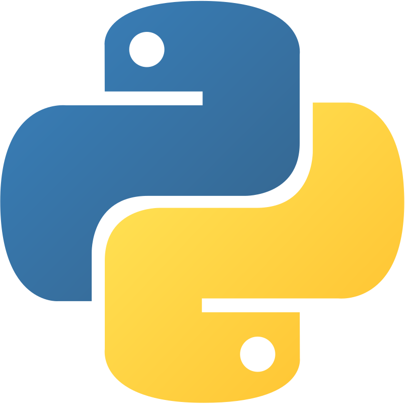
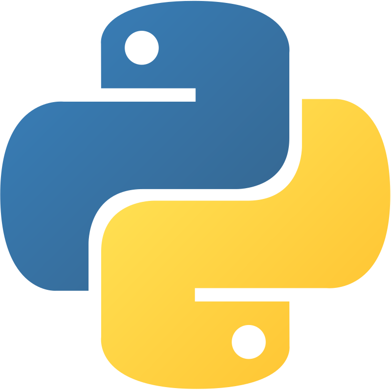

cv réalisé en html 5/ css 3/ js
Développeur à temps plein ou en alternance
guichard julien
cv réalisé en html 5/ css 3/ js
Développeur à temps plein ou en alternance
guichard julien


 



Projet Gestion Relation Client : Maintenance évolutif Java/css
Projet Demande de retraite en ligne : Maintenance évolutif java
Projet coproduction : Coproduire avec le retraité pour sa retraite
Projet la chaine des paiements Retraite :
Déployer des applications Java sous WebLogic : Esther, Bureau Métier
Support Utilisateurs : MANTIS
Créer des schémas utilisateurs dans une base de données Oracle
Redémarrer les BDD ORACLE
Gérer la partie Log Applicatif du Filesystem utilisateur Installer les correctifs spécifiques à des projets hors mise en référence
Prendre en charge (en autonomie) des projets des clients. Trouver les solutions techniques en respectant une deadline.
Support utilisateur sur l’installation informatique et les logiciels